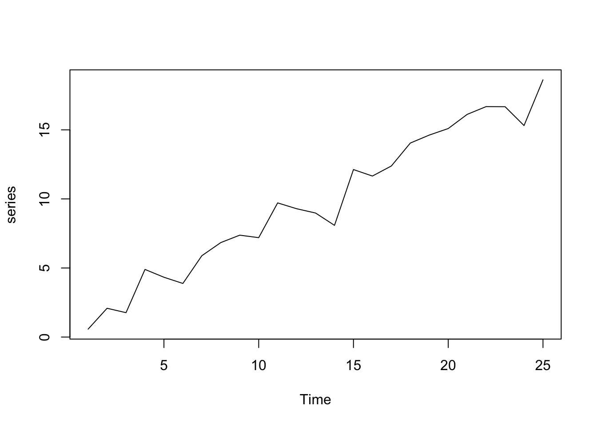

Chapter 8 Web Apps

To illustrate how web apps work we choose to visualize some well known, but for most people not very intuitive properties of the sample mean \(\bar{X}\). While it is quite obvious that the expected value of the sample mean \(E(\bar{X}) = E(\frac{1}{n}\sum_{i=1}^{n}X_i) = \mu\) is equal to the expected value of \(X_i\), their variances differ.
Let us illustrate these properties using a plot. First, we are going to generate 1000 random draws \(X_i\) from a standard normal distribution \(N(\mu=0,\sigma^2=1)\) and plot a histogram to exemplify their probability density. We calculate the sample mean of five consecutive draws (n <- 5) and compare the probability density of these 200 (N) calculated means to the probability density of the initial draws. In order to compare the differences more clearly, we are also adding a density line for the empirical normal distribution.
# Make results comparable
set.seed(100)
# Draw random numbers and calculate N means based on n draws
n <- 5
N <- 200
rngmat <- matrix(rnorm(n*N), nrow = n, ncol=N)
meanvec <- apply(rngmat, 2, mean)
# Plot histograms
MASS::truehist(rngmat, col=rgb(0,0,1,1/6),xlim=c(-5,5),ylim=c(0,1),xlab="")
par(new=T) # Necessary to combine two histograms in one plot
MASS::truehist(meanvec,col=rgb(1,0,0,1/4),xlim=c(-5,5),ylim=c(0,1),xlab="")
# Add empirical probability density as line
xseq <- seq(-5,5,length.out = 1000)
y <- sapply(xseq, function(x){dnorm(x, mean(rngmat),sd(rngmat))})
ymean <- sapply(xseq, function(x){dnorm(x, mean(meanvec),sd(meanvec))})
lines(xseq, ymean, type="l",col="red")
lines(xseq, y, type="l", col="blue")
Obviously, the shown plot is dependent on the number of draws that are used for every calculation of a mean n and the total number of means that we want to calculate N. Additionally, we can make the user decide whether he wants the density lines in the plot and if the random numbers are drawn using a seeded random number generator for which a seed can be provided. Every time one of these four inputs changes the plot needs to be recreated. A very convenient way to make our small program accessible by users that have little or no experience using R, we can transform our script into a web app using the shiny-package.
A shiny app can be easily build using three simple components: a page constructor, a server script, and app constructor. The page constructor creates the user interface meaning it provides a mechanism for users to input values for variables and displays results. The server script takes the inputs from the user interface, performs calculations and returns the output for the user interface. The app constructor links the user interface and the server script and coordinates everything. The general structure of a shiny app in the required form is as shown in the following snippet.
library(shiny)
# Define UI for application that draws a histogram
ui <- fluidPage(
titlePanel("Title"),
sidebarLayout(
sidebarPanel(
## Input
),
mainPanel(
## Output
)
)
)
server <- function(input, output) {
## Actual R Script
}
shinyApp(ui = ui, server = server)# Shiny Example for the CSWR Course
library(shiny)
# Define UI for application that draws a histogram
ui <- fluidPage(
# Application title
titlePanel("Random Samples and their Mean"),
# Sidebar with a slider input for number of bins
sidebarLayout(
sidebarPanel(
sliderInput("N",
"Number of samples:",
min = 10,
max = 100,
value = 50),
sliderInput("n",
"Number of draws per sample:",
min = 1,
max = 100,
value = 1),
checkboxInput("showdensity",
"Show Density?",
value = FALSE),
numericInput("seed", "Seed",
value=NULL,
min = 0,
max = 10000,
step = 1)
),
# Show a plot of the generated distribution
mainPanel(
plotOutput("distPlot")
)
)
)
# Define server logic required to draw a histogram
server <- function(input, output) {
output$distPlot <- renderPlot({
if(!is.na(input$seed)) set.seed(input$seed)
rngmat <- matrix(rnorm(input$n*input$N), nrow = input$n, ncol=input$N)
meanvec <- apply(rngmat, 2, mean)
xseq <- seq(-5,5,length.out = 1000)
y <- sapply(xseq, function(x){dnorm(x, mean(rngmat),sd(rngmat))})
ymean <- sapply(xseq, function(x){dnorm(x, mean(meanvec),sd(meanvec))})
ymax <- ceiling(max(c(y,ymean)))
ymax <- ifelse(is.finite(ymax),ymax, 1)
MASS::truehist(rngmat, col=rgb(0,0,1,1/6),xlim=c(-5,5),ylim=c(0,ymax),xlab="")
if(input$showdensity) lines(xseq,y,type="l",col="blue",lwd=2)
par(new=T)
MASS::truehist(meanvec,col=rgb(1,0,0,1/4),xlim=c(-5,5),ylim=c(0,ymax),xlab="")
if(input$showdensity) lines(xseq,ymean,type="l",col="red",lwd=2)
})
}
# Run the application
shinyApp(ui = ui, server = server)